IIC3912 - Tópicos Avanzados de Gráfica Computacional
Francisca T. Gil-Ureta ⋅ 2026
Clase 2 | Geometría y Meshes
¿Cómo modelamos objetos?
Clase 01 - Después de esta clase l@s alumn@s pueden explicar cuales son los elementos básicos de una escena 3D y cómo se relacionan entre ellos (mediante transformaciones jerárquicas)
Clase 02 - Después de esta clase l@s alumn@s pueden construir una mesh a mano para las geometrías básicas (cubo, cilindro, esfera) y pueden explicar cuales son los componentes de un mesh.
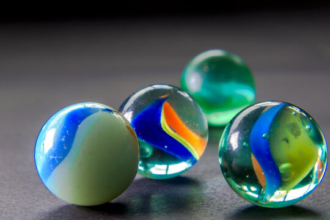
Modelando Objetos
En la clase anterior dijimos que en computación gráfica intentamos modelar el mundo usando modelos matemáticos dentro de la computadora.
Muchos de estos modelos matemáticos suelen ser continuos. Por ejemplo podemos definir la esfera con una ecuación matemática, como:
x² + y² + z² = r², todos los puntos a distancia r del zero del mundo.
🚨No es posible guardar todos estos puntos en el computador.
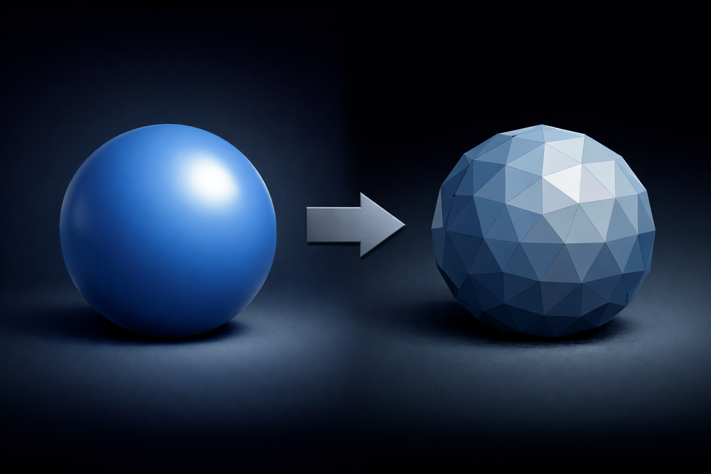
El poder de las aproximaciones
Las computadoras sólo pueden almacenar datos discretos: listas de números finitas.
Para modelar los objetos, vamos a tomar muestras (samples) de la forma del objeto, donde cada muestra captura información local de la geometría.
Y luego camos a usar estas samples para construir una aproximación discreta del objeto.
Dos formas de representar objetos
Existen varias estrategias para representar objetos en el computador,
pero las dos más comunes son Surface y Volume Representations
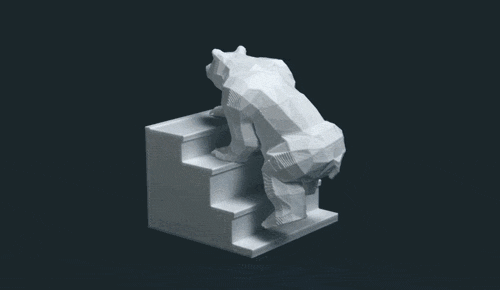
Surface Representations
Modelamos la frontera (o limite) visible del objeto.
Meshes (mallas poligonales), son las más comunes en real-time graphics. Usadas en videojuegos, cine, 3D scanning, 3D printing, AR/VR, web3D.
Subdivision surfaces (superficies de subdivisión). Son una abstracción de más alto nivel que permiten subdividir iterativamente un mesh para aproximar una superficie.
NURBS (Non-Uniform Rational B-Splines), son más comunes en ingeniería y permiten modelar superficies con ecuaciones paramétricas. Uno modela indirectamente via control points.
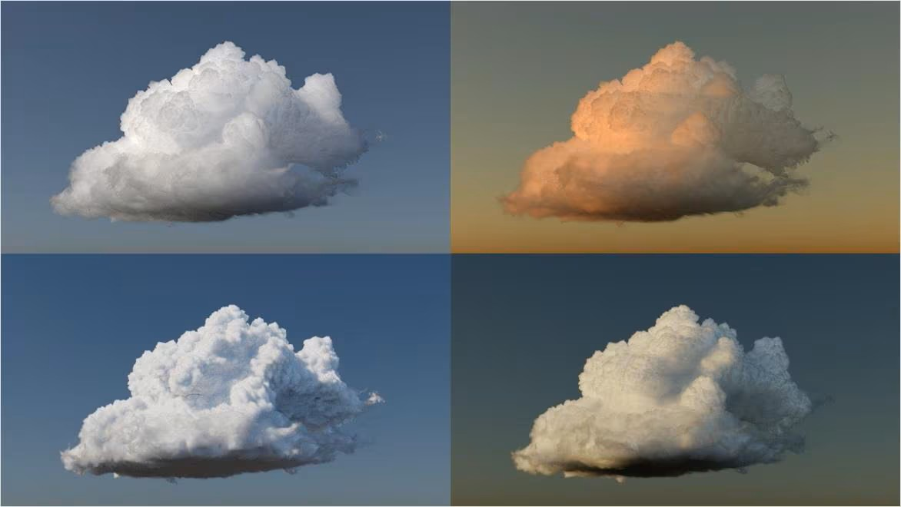
Volume Representations
Modelamos lo que ocurren dentro del objeto, o en cada punto del espacio.
Voxel Grids, son cómo pixeles pero 3D. Cada voxel es un cubo (cell) que guarda valores cómo densidad, color, temperatura, etc. Son usados para simulaciones volumétricas (e.g. fluidos, explosiones), algunos juegos (e.g., Minecraft)
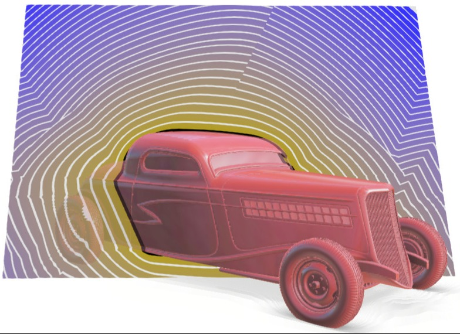
Signed Distance Fields (SDFs): campos escalar (vector field) que en cada punto guarda la distancia a la superficie más cercana (negativo dentro, positivo fuera). Usado en implicit modeling, y detección de colisiones en videojuegos, entre otros.
NeRF (Neural Radiance Fields), usa una neural network para representar un campo volumétrico de radiance (color) y densidad. State of the art en investigación, no se usa mucho en producción.
Gaussian Splatting, la escena se representa como millones de Gaussianas 3D (blobs elipsoides) que guardan color, opacidad, y orientación. State of the art en investigación, se está empezando a usar en producción.
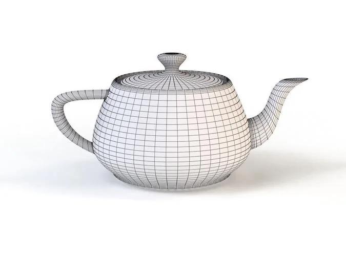
Polygon Meshes
Una forma común de representar superficies es usando mallas poligonales (meshes).
Tomamos muestras de las superficie usando puntos llamados vertices, y conectamos esos puntos creando polígonos o faces.
- vertex: puntos 3D en la superficie del objeto
- edge: línea que conecta dos vertices
- face: polygon formado por 3 o más vertices.
Los dos polígonos más usados son quadrilateros y triángulos: quad mesh y triangle mesh
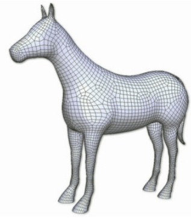
Quad Mesh
Muchos artistas prefieren trabajar con quad-meshes por que:
- tienen una topología más limpia
- pueden trabajar con edge-loops
- tienen mejores propiedades de subdivisión.
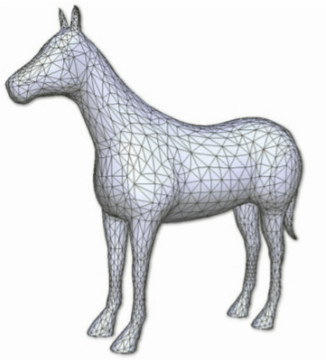
Triangle Mesh
Los triángulos son usados por que:
- siempre son planos
- siempre son convexos
- son fáciles de renderizar (graphics API usan triangulos)
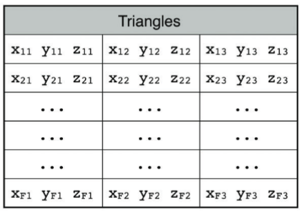
Estructuras de Datos
La forma más simple de representar una malla de triángulos es representar cada cara por sus tres vertices.
Cada triangulo es una lista de 3 vertices, donde cada vértice es a su vez una lista de tres floats representando su posición en los ejes (x, y, z)
permite operar cada superficie por separado
f
Un con sería que dos caras adjuntas compartirían dos valores
M
Se ve como la primera solucion, y no suele ser la mejor esa
b
Muy poco optimizado y eficiente!
C
Dificil interpretar Complejo de ordenar Eficiente
V
Que muchos datos (vértices) se repiten
F
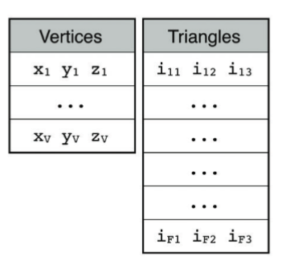
Indexed Geometry
Guarda un lista de vertices, y codifica los polígonos como sets de indices.
Este formato es simple y más eficiente que non-indexed geometry. Elimina la duplicación de vertices y explicita la conectividad.
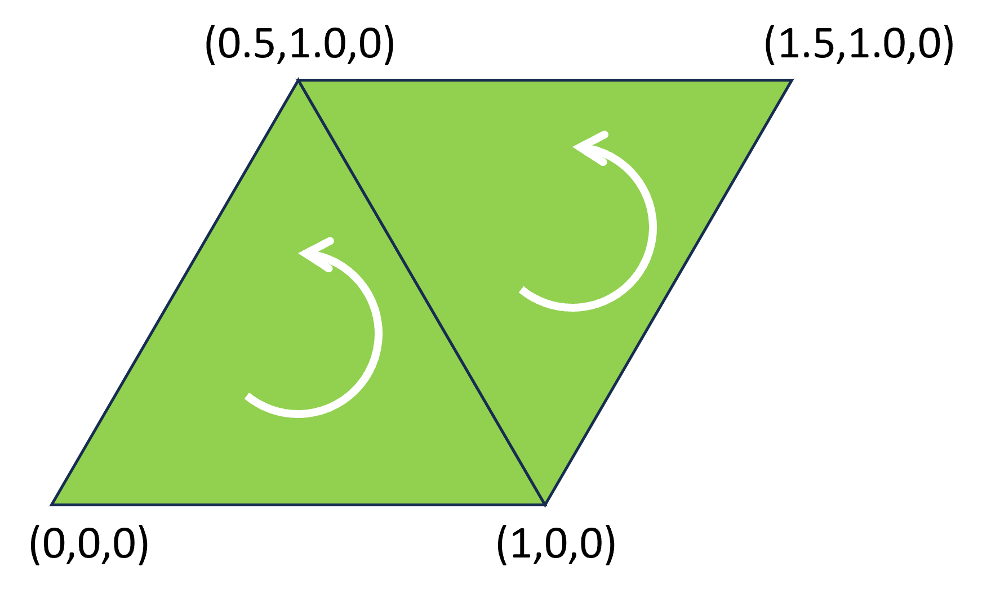
Orientación de los Triángulos (Winding Order)
El order de los vertices del triangulo determina su orientación; el order determina cuál lado del triangulo se considera la parte delantera (front)
Clockwise: a favor del reloj
Counter Clockwise: en contra del reloj
Ya que buscamos representar una superficie, y al renderizar nos interesa solo un lado de la superficie.
C
Solo vemos la cara "exterior" del triangulo, misma que esta hacia donde apunta la normal. Esto es para así ahorrar renderizar el interior que si tuviesemos una piramide por ejemplo, no sería necesario mostrarla :)
G
Para optimizar el renderizado, que sea solo lo necesario
c
Ya que la parte visible del triángulo representa el "exterior", ya que en un modelo 3d normal no se debería ver el interior, esto es útil por temas de optimización
I
Si es parte de un modelo cerrado, el usuario podría nunca ver el interior de éste (se ahorra performance al no renderizar el interior)
M
Opti costo de render en modelos con muchos triangulos
V
la luz del vector normal apunta o no a la cámara
f
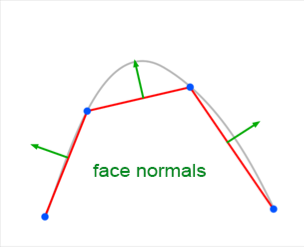
Normales
La orientación del triangulo define su normal (face normal) y la podemos calcular cómo el producto cruz de dos de sus lados:
e01 = p1 - p0
e02 = p2 - p0
n = np.cross(e01, e02)
n = n / np.lignal.norm(n)
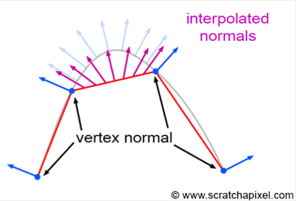
Esta normal no es suficiente para aproximar superficie curvada (e.g., cilindro). Para modelar estas superficies también almacenamos normales por vértice (vertex normal). Estas normales suelen calcularse como el promedio de las normales de caras vecinas.
Durante el rendering (creación de la imagen), el renderer interpola las vertex normals entre los vertices, de forma que la superficie se ve curva incluso si la geometría está hecha de triángulos planos.
Face normal depende de la orientación del triangulo y vertex normal son normales de las aristas que sirven para simular curvas en el renderizado
c
Un mesh está compuesto de vertices, que son puntos en el espacio que determinan el polígono, edges que corresponden a las líneas que conectan los vértices y faces, es decir, uniones de 3 o más vértices
A
Los vértices son puntos del mesh que se conectan a tráves de las aristas que a su vez forman caras, estás caras son solo visibles desde la parte exterior ya que ahorra recursos. También se pueden usar los normales de los vértices para interpolar y simular una superficie curva (o con más caras de lo que tiene en realidad)
I
Los meshes se componen por conjuntos de puntos que sirven para representar superficies o volumenes complejos mediante la interaccion estre estos (pueden formar triangulos planos, superficies curvas o tener comportamiento individual como en el caso de los voxel grids)
J
Vimos quad, triangle mesh, que se pueden formar a partir de vértices y planos,(en uno usamos cuadrados y en el otro triángulos) además de que de estos para "mejorar las curvas", es decir que no sea tan cortado podemos interpolar usando las normales de estas componentes :O
G
edd de la mesh permite almacenar los datos de la misma volumen, superficie, arista, vertice vector normal del triangulo: apunta en la normal del plano, pero no se para que me sirve
b
vértices: coordenadas dentro del espacio, caras: lista de vértices o índices que forman la cara, vectores normales: mapeo que genera el vector normal de la cara,
f
los componentes de un mesh son figuras poligonales que se conectan a través de vértices, ya sean de tipo quad (cuadrilatero) o triangle (triangulos)
C
Los meshes están formados por triangulos o cuadrados que son definidos mediante vertices y aristas, las aristas son conexiones entre vertices.
S
Vertices - puntos en el espacio que definen el mesh Poligonos - caras formadas al linkear vertices Normal - orientación de la superficie Topología - manera/estilo/metodo de organizar los poligonos para el modelo
V
vertices que son los puntos del poligono, aristas que son las lineas que unen esos puntos y caras que es el area que comprende el conjunto de vertices y aristas
f
Escala de 1, orientación XY, centro (0.5, 0.5, 0)
N
Escala 1x1, orientacion XY... Asi que estamos XD Habría que mover los vertices -0.5 en X y en Y
V
Topología de la Malla
La topología del mesh describe su estructura de conectividad; cómo los vertices, aristas (edge), y caras se conectan las unas a las otras.
Es independiente de la posición de los vertices.
Responde a preguntas del tipo:
- Qué vertices forman cada cara?
- Qué caras comparten una arista?
- Qué vertices son vecinos?
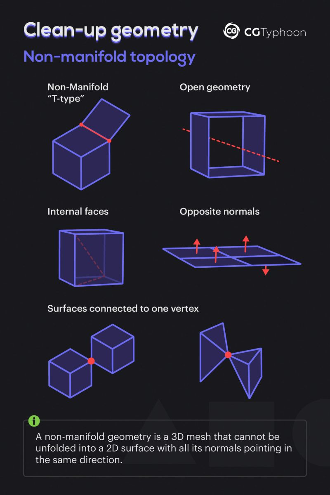
Manifold Mesh
No todas las meshes modelan superficies. Si queremos que nuestra mesh aproxime una superficie requerimos:
Edge connectivity: cada arista (edge) debe pertenecer sólo a dos caras. Una arista no puede ser compartida por 3 o más caras.
Vertex connectivity: los vertices no pueden conectar multiples 'conos' separados, deben conectar un fan continuo de caras.
Orientability: las normales de todas las caras deben estar orientadas consistentemente; el mesh tiene un 'adentro' y un 'afuera' bien definido.
Watertight: El modelo no tiene agujeros o gaps en su superficie.
Casos más comunes de non-manifold meshes
Agujeros: caras faltantes o gaps (a veces pequeños). Podemos detectarlas buscando edges que sólo tienen una cara.
Isolated Vertices: vertices que no conectan ninguna cara ni edge.
Internal Faces: caras que están dentro de otros volumenes
Edges compartidos por más de dos caras: T-junctions
No se preocupen, ese tipo de análisis no lo haremos en javascript.

Actividad recomendada (no obligatoria)
Leer y highlight que conceptos entienden y cuales no entienden del libro Fundamentals of Computer Graphics, capitulo 12. En particular, subsecciones 12.1 (Triangle Meshes), y 12.2 (Scene Graphs)
Este libro está en biblioteca y está disponible electrónicamente via biblio y también vía 🏴☠️. Intenten usar la opción de biblioteca #support-your-library
Ediciones más antiguas también sirve.
🌱Lean y discutan en Canvas lo que entienden / no entienden.
🌱Traigan preguntas a la próxima clase.
El libro también ofrece un repaso de Algebra Lineal (capitulo 6) y Transformation Matrices (capitulo 7).